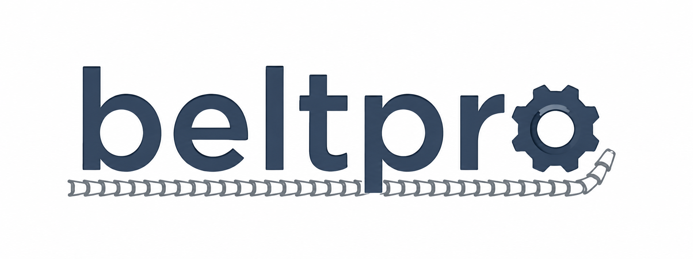
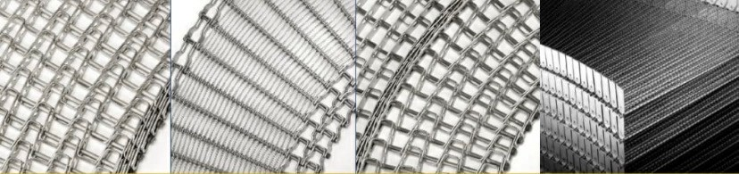

BELTPRO specializes in professional installation, maintenance, troubleshooting, and optimization of spiral conveyor systems and industrial baking ovens.
Since 2014 we have supported food processing and manufacturing companies with practical engineering solutions that improve equipment reliability, production efficiency, and conveyor performance.
We analyze mechanical systems to identify opportunities for performance improvements through better engineering practices.
BELTPRO's expertise has been built through years of hands-on training and field experience with some of the most respected and experienced professionals in the spiral conveyor industry, including Marty Tabaka, Mike Whittle, John Tech and others. This knowledge has been complemented by more than a decade of practical experience supporting installations, commissioning, troubleshooting, inspections, maintenance, retrofits, and performance optimization for spiral conveyor belts and baking oven systems across the Americas.
Our technical approach is rooted in proven engineering principles, practical field experience, and a commitment to continuous learning. This professional lineage traces back to the pioneering innovations and commitment of Gerald Roinestad in this field, whose work laid the foundation for modern spiral conveyor technology.
Need technical support, installation services, troubleshooting, or engineering assistance?
ME Ricardo Pio Barakat
📱 Phone / WhatsApp
+55 14 99800-5395
engenharia@beltpro.com.br
msc.barakat@outlook.com